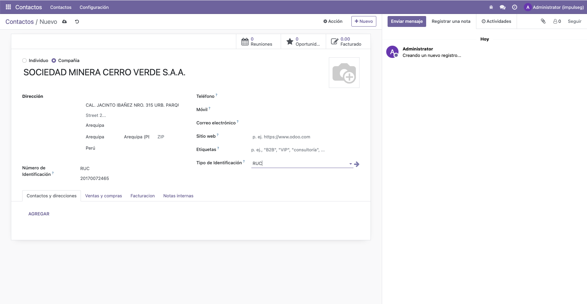
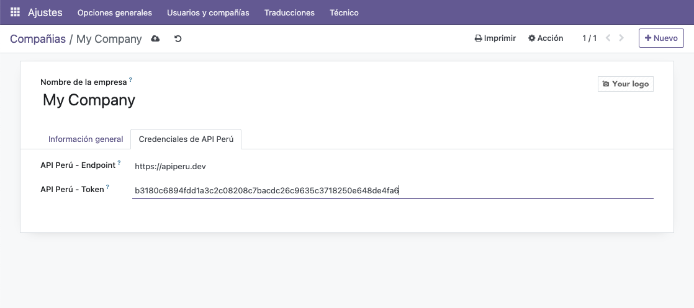

Este módulo facilita la autocompletación de datos empresariales y personales en Odoo utilizando la API PERÚ para consultas de RUC y DNI.
Autocompletación de datos a partir del RUC o DNI.
Recuperación automática de la razón social, domicilio fiscal y más.
